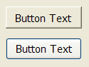
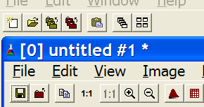
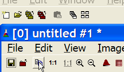
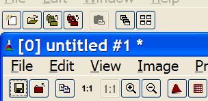
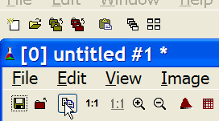

Creates an interface element that is a button. When selected, this element activates a function in the application. Its visual presentation can contain a text or an image.
Ihandle* IupButton(char *title, char *action); [in C] iup.button{title = title: string} -> elem: ihandle [in Lua] button(title, action) [in LED]title: Text to be shown to the user.
action: Name of the action generated when the button is selected.This function returns the identifier of the created button, or NULL (nil in IupLua) if an error occurs.
BGCOLOR: Background color of the text.
FGCOLOR: Text color.
FONT: Character font of the text.
IMAGE: Image name of the non-pressed button. The button's title (attribute TITLE) is not shown when this attribute is defined.
IMPRESS: Image name of the pressed button.
IMINACTIVE: Image name of the button when the ACTIVE attribute equals "NO". If it is not defined but IMAGE is defined then for inactive buttons the non transparent colors will be replaced by a darker version of the background color creating the disabled effect.
TITLE: Text of the button.
FLAT: (Windows Only) Hides the button borders until the mouse enter the button area.
ACTION: Action generated when the button 1 (usually left) is selected. This callback is called only after the mouse is released and whe it is released inside the button area.
BUTTON_CB: Action generated when any mouse button is pressed and released.
ENTERWINDOW_CB: Action generated when the mouse enters the button.
LEAVEWINDOW_CB: Action generated when the mouse leaves the button.
Buttons with images or texts can not change its behavior after mapped. This is a creation attribute. But after creation the image can be changed for another image, and the text for another text.
Text and images are always centered.
Buttons are activated using Enter or Space keys.
When IMPRESS and IMAGE are defined together, IUP does not show the element's border to provide a 3D effect; the user has to define the border in the image itself.
In Windows, when using Windows XP Visual Styles the BGCOLOR attribute is ignored when a non empty text button is created.
Here are some examples of buttons using Windows XP Visual Styles:
 Text button without and with Visual Styles.  Windows XP without Visual Styles.  Windows XP without Visual Styles
and FLAT=YES.
The border is displayed only
when the mouse is over the button.
The image of the button should be
smaller when FLAT=YES. Windows XP with Visual Styles.  Windows XP with Visual Styles
and FLAT=YES.